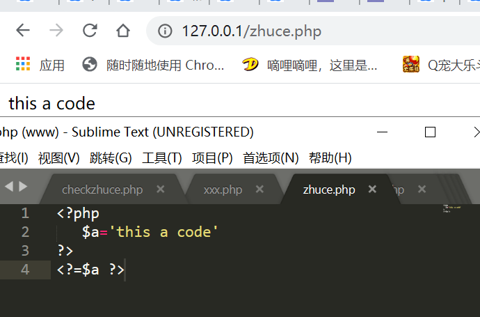
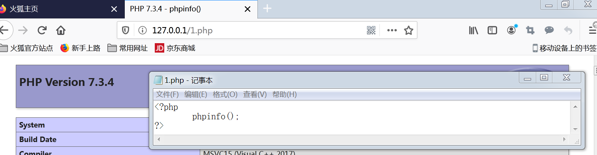
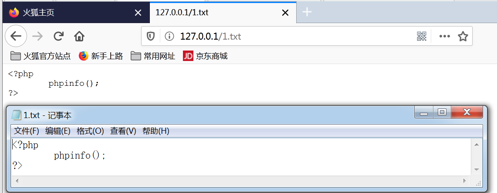
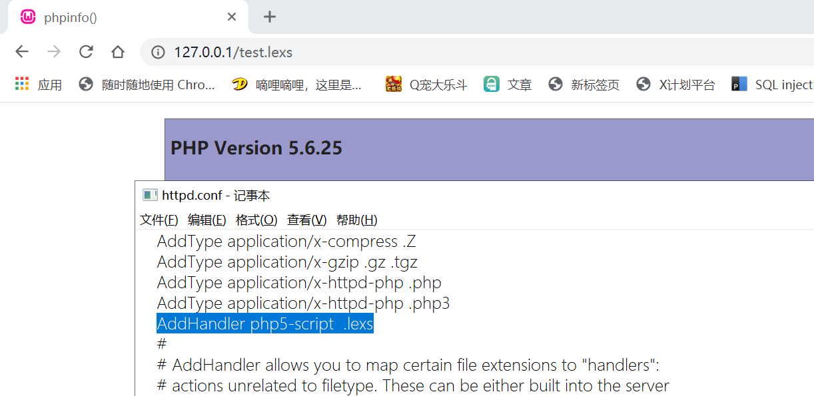
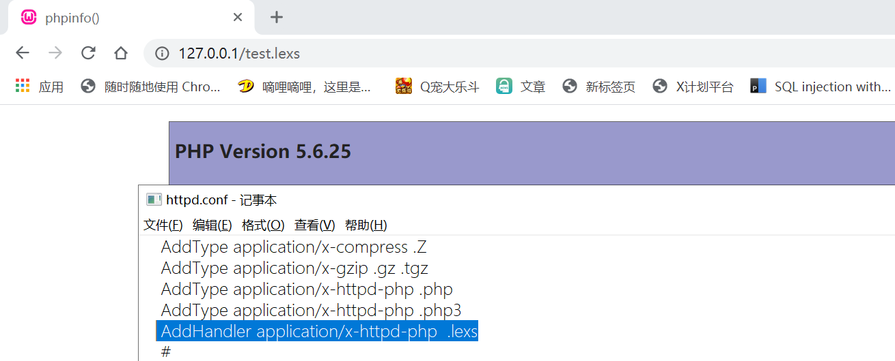
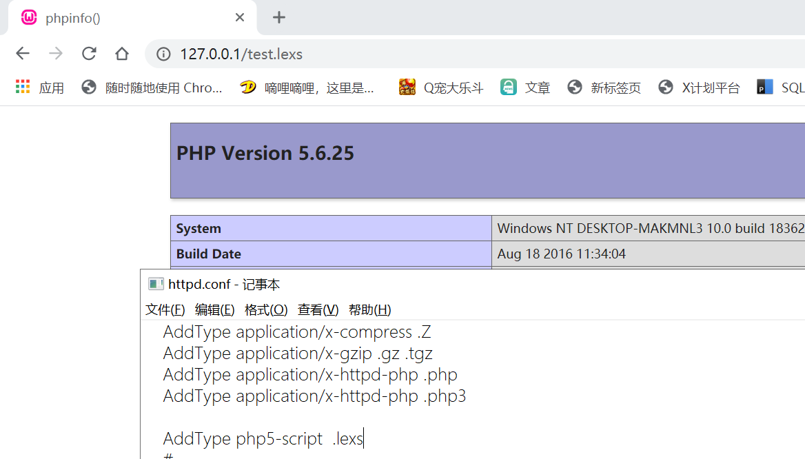
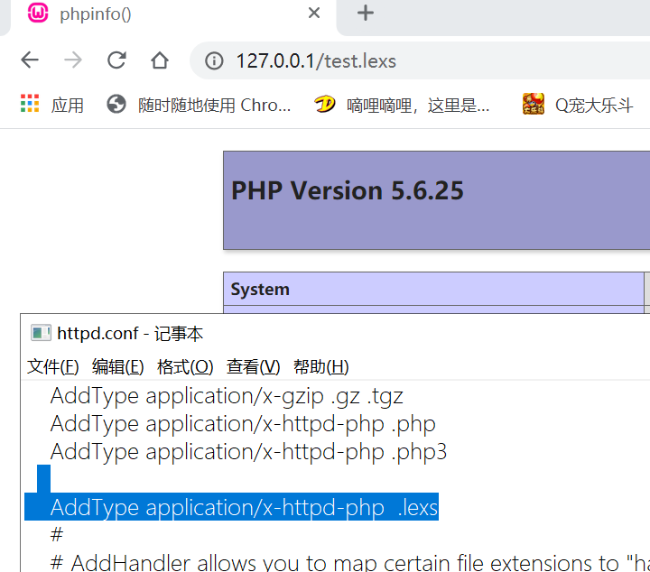
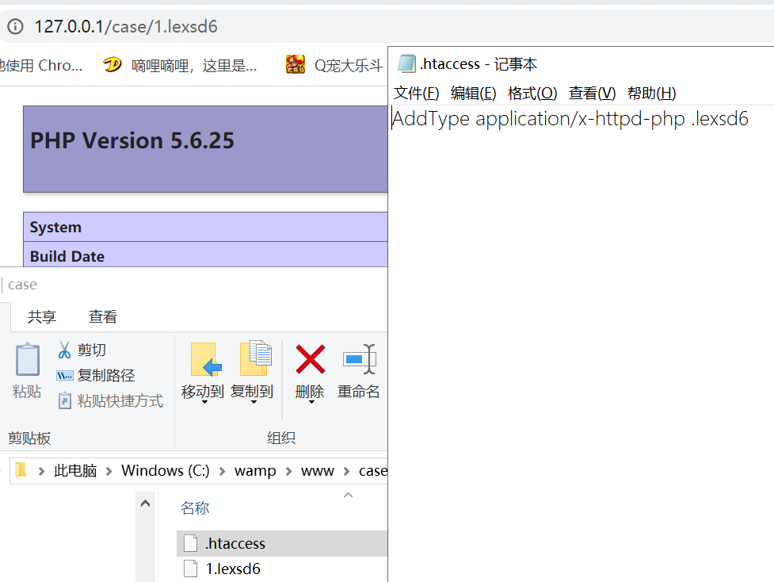
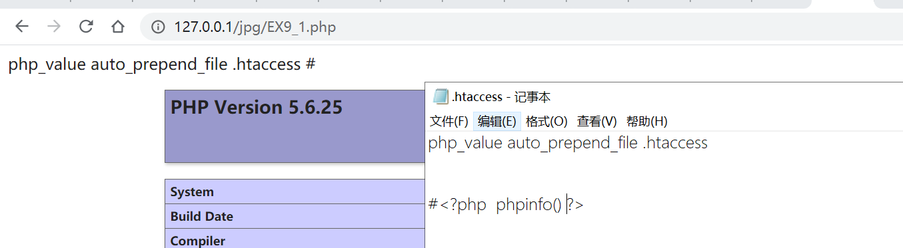

按照一般植入webshell的方法通常是上传一段包含恶意代码文件，然后让服务器解析文件里的恶意代码从而得到get shell的目的。那么问题来了,文件中什么的字符会被当成php代码来解析？PHP代码中指令怎么分割？什么样的文件服务器会去解析？(本文章默认要执行的文件已在网站目录下的情况)
0x01PHP代码的特征
当然一个文件被php解析时不会全部都拿去执行，而是将具有php代码特征的部分拿去执行。而那特征就是php的开始与结束标记。
按照官方的说法：PHP解析器当解析一个文件时，PHP 会寻找起始和结束标记，这告诉 PHP 二者标记之间的是要解析的php代码。此种解析方式使得 PHP 可以被嵌入到各种不同的文档中去，而任何起始和结束标记之外的部分都会被 PHP 解析器忽略。
在官方文档中，给我们提供以下几种php起始和结束标记：
(1)’< ?php’ 与’? >‘
这种标记用法是最常见的用法，也被称为长标签：
1 | #起始标记,php可以大小写混用 |
(2)<script>标签标记
用script标签来标记php代码,使用方法如下:
1 | <script language="php">#php可以大小写混用 |
注意的是在php 7.0.0 版本后，，默认不支持这种写法。
(3)ASP 风格标记
用<%%>来标记php,如要使用此种标记要php.ini 配置文件中的指令 asp_tags=On后才可用。 但要注意的是在7.0.0后的版本里移除了asp_tags.
具体使用方法如下:
1 | <% %>标记用法： |
(4)使用短标签来标记
短标记（<? ?>）仅在通过 php.ini 配置文件中的指令 short_open_tag =On后才可用，或者在 PHP 编译时加入了 –enable-short-tags 选项.具体使用方法如下:
1 | <? echo'this is php code by ASP'; ?> |
同时这种标签也有 echo 标记 ‘<?=’:
1 | <?='text'; ?>#等价<? echo 'echo';?>的使用方式 |
注意的是：PHP 5.4 起，短格式的 echo 标记 <?= 总会被识别并且合法，而不管 short_open_tag 的设置是什么。
0x02如何分割PHP代码指令
同 C 或 Perl 一样，PHP 需要在每个语句后用分号结束指令。一段 PHP 代码中的结束标记隐含表示了一个分号；在一个 PHP 代码段中的最后一行可以不用分号结束。如果后面还有新行，则代码段的结束标记包含了行结束。
1 | //单行代码可以省略; |
除了用；号分割外，也可以用php标记来分隔：
1 | <?php |
执行效果：

0x03让文件被服务器解析
我们一般在初学php时，一般都是用phpstudy 或者Wampserver 来一件搭建php环境的。但在搭建后，就会发现一个问题。只有后缀名为php的文件里面的php代码被执行了,而其他后缀名的文件就算里面有php特征标记的php代码也没有被执行。


可见网站的服务器并未让非php文件里代码被执行。这是为什么？
这是因为网站的服务器在处理这个非php文件时，并未让它进入php解释器处理，而直接将数据传送过来。
那么问题来了如让服务器把文件送入php解释器？
1.更改服务器的httpd.conf配置
这里改法又有两种方法
（1）使用AddHandler 指令：
AddHandler 说明什么样的扩展名使用什么样的程序来处理，描述的是扩展名与处理程序之间的关系。具体用法如下
1 | AddHandler php5-script .extension |


（2）使用AddType指令：
AddType指令在给定的文件扩展名与特定的内容类型之间建立映射关系.也可以用来描述后缀名与php解释器之间的关系：
1 | AddType php5-script .extension |


2.更改.htaccess文件
概述来说，htaccess文件是Apache服务器中的一个配置文件，它负责相关目录下的网页配置。通过htaccess文件，可以帮我们实现：网页301重定向、自定义404错误页面、改变文件扩展名、允许/阻止特定的用户或者目录的访问、禁止目录列表、配置默认文档等功能。如果要用.htaccess以外的其他文件名，可以用AccessFileName指令来改变。例如，需要使用.config ，则可以在服务器配置文件中按以下方法配置：AccessFileName .config 。
在/www/htdocs/example目录下的.htaccess文件中放置指令，与在主配置文件中<Directory /www/htdocs/example>段中放置相同指令，是完全等效的。
另外, .htaccess文件中的配置指令作用于.htaccess文件所在的目录及其所有子目录，但要注意的是子目录中的 .htaccess中的指令会覆盖父目录的 .htaccess中的指令或者主配置文件中的指令。
我们可以在.htaccess文件中写入配置命令来达成我们的目的，例如：
1 | AddHandler application/x-httpd-php .extension |

3.更改php-fpm.conf
php-fpm中文名称php FastCGI 进程管理器。PHP FastCGI 进程管理器，用于管理PHP 进程池的软件，用于接受web服务器的请求。PHP-FPM提供了更好的PHP进程管理方式，可以有效控制内存和进程、可以平滑重载PHP配置。
php-fpm.conf文件里的security.limit_extensions 选项的参数作用是限制 FPM 允许解析的脚本扩展名。 此设置可以预防 web 服务器配置的错误。 应当限制 FPM 仅仅解析 .php 扩展名，阻止恶意用户使用其他扩展名运行 php 代码。 默认值： .php .phar
4.利用文件包含来包含文件
(1)利用php函数包含代码执行
php在文件包含进行文件包含会执行php标记里代码。因此我们可以通过php的文件包含函数来通过一个执行的php页面来包含我们想要执行文件。
常见的文件包含的函数有：
1.include() ：在包含文件没找到时会产生警告，并继续进行php代码。
2.include_once() ：在include() 的特性下，多了只能包含一次的特性。
3.require()：在包含文件没找到时会停止进行php代码。
4.require_once()：在require() 的特性下，多了只能包含一次的特性。
以上函数在执行时,会自动将要执行的脚本当成php来执行.
(2)利用 .htaccess文件或php.ini文件来文件包含
同时也可以通过修改 .htaccess文件或php.ini文件,来进行文件.
php.ini中auto_prepend_file和auto_append_file分别可以在作用范围内的php文件在文件头/尾自动include指定文件并且可以支持php伪协议.
1 | auto_prepend_file 在页面顶部加载文件 |
注意：auto_prepend_file 与 auto_append_file 只能包含一个php文件，但这个php文件内可以包含多个其他的php文件。
又 .htaccess文件中php_value 的设置可以设置php.ini里的选项。
1 | php_value auto_prepend_file shell.php |
故可以把代码入.htaccess文件中，再通过auto_prepend_file/auto_append_file包含。即：
